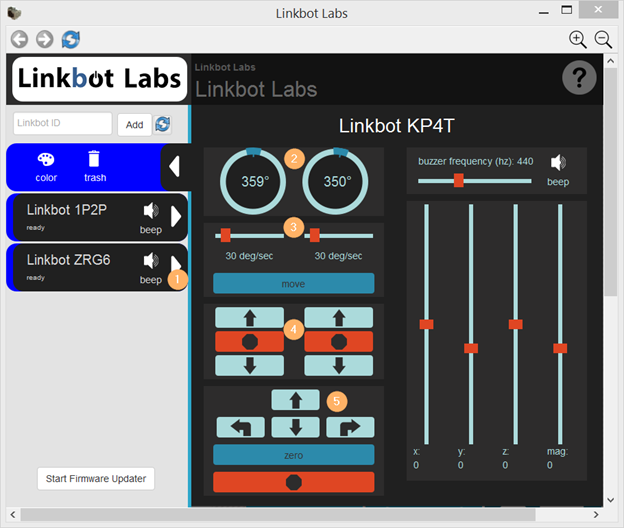

STEP 1: Plugin the Linkbot or Z-Link dongle.

STEP 2: Turn on the linkbot by pressing and holding the power button for 3 seconds.

STEP 3: Open the Robot Manager along the left edge of the screen.
STEP 4: Enter the Linkbot ID into the Robot Manager and push "Add." This will add a Linkbot robot to the Robot Manager, shown below.
STEP 5: Open the Robot Control Panel by pressing the white expand arrow next to the Linkbot robot that was added.
STEP 6: If the control panel is too big or too small for your screen then you can zoom in or out using the buttons in the top right, as shown below.
STEP 7: To go back to the Main Page click the Linkbot Labs icon at the top left of the screen. Later Gator!